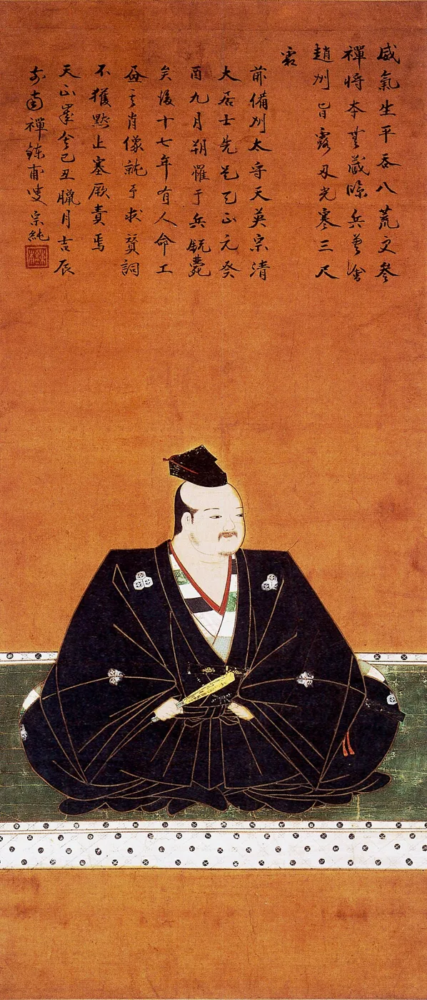

浅井長政戦国編 其の九
妻の兄にそむいた若者は、29歳で最期をむかえます。
この人の一番の謎：なぜ信長にそむいたの？
生涯の要点
- 1545年、近江（今の滋賀県）の浅井久政の子として生まれました
- 1560年に家を継ぎ、同じ年、野良田の戦いで南近江の六角氏に勝ちました
- 織田信長の妹・お市を妻に迎えました
- 1570年、信長が越前の朝倉氏を攻めると、朝倉の側につきました。理由には朝倉との古い縁など諸説あります
- 同じ年、姉川で織田・徳川の軍に敗れました
- 1573年、小谷城を囲まれ、29歳（数え年）で自害しました
- 妻のお市と3人の娘は、城から助け出されました
- 長女の茶々はのちの淀殿、三女の江はのちの二代将軍・徳川秀忠の妻です
よくある疑問
なぜ信長にそむいたの？
1570年、信長が越前の朝倉氏を攻めると、朝倉の側につきました。理由には朝倉との古い縁など諸説あります。
妻と娘たちはどうなった？
妻のお市と3人の娘は、城から助け出されました。長女の茶々はのちの淀殿、三女の江はのちの二代将軍・徳川秀忠の妻です。
長編で、この場面から見る
- ▶ 2:34 3 妻の兄にそむいた若者（浅井長政）
非業の最期をとげた戦国の人10人｜わが子に討たれた父、腹を切らされた茶人
長編を読む
非業の最期をとげた戦国の人10人｜わが子に討たれた父、腹を切らされた茶人
同じころに亡くなった人

浅井長政像（高野山持明院所蔵）
60秒で見る
出典と画像
参考：コトバンク「浅井長政」「小谷方」（日本大百科全書・改訂新版 世界大百科事典・ブリタニカ国際大百科事典・デジタル版 日本人名大辞典+Plus）
肖像：浅井長政像（高野山持明院所蔵）／Wikimedia Commons／パブリックドメイン
写真：小谷城跡の石垣 撮影 ブレイズマン／Wikimedia Commons／パブリックドメイン
動画のナレーション：VOICEVOX:青山龍星